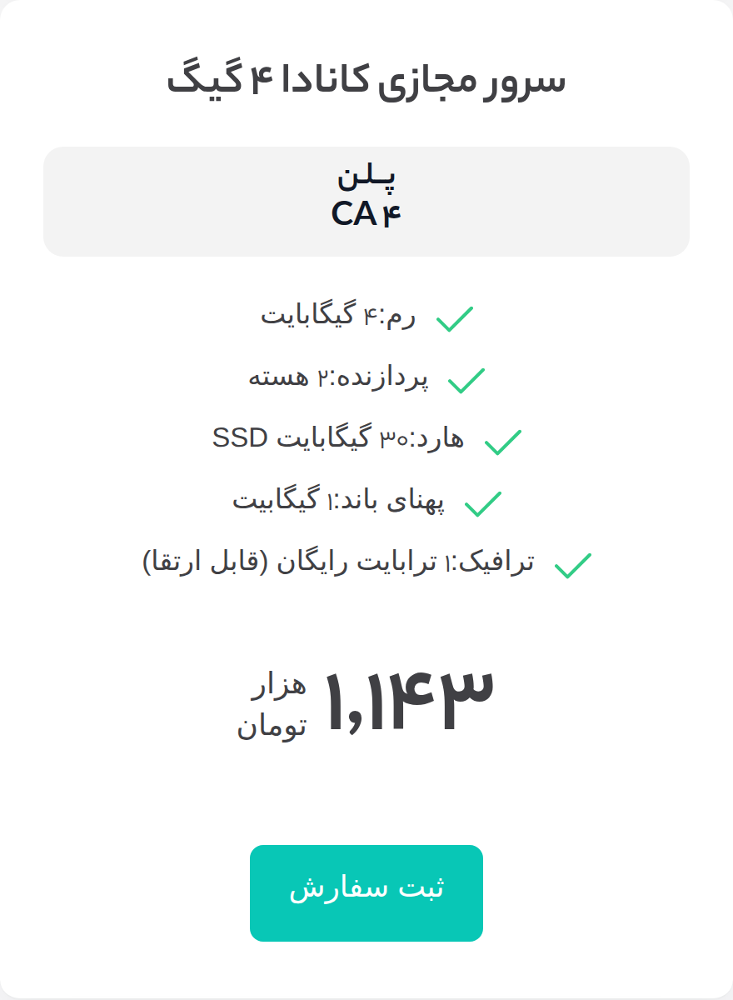

کامپیوتر تو
دستیار فعلی، ترمینال و مرورگر برای ورود به حسابها.
local AI → SSH۰۱ / یک جای ثابت برای ادامهٔ کار
اگر محیط کارت روی سرور باشد، قطع شدن اتصال، خودِ نشست را نمیبندد. از کامپیوترت وصل میشوی و همان کار را ادامه میدهی.
برای کسی که قبلاً کلود را روی کامپیوترش استفاده کرده، اشتراک دارد و پروژهاش در گیت است.
ببینیم چطور ↓سیاست مناطق پشتیبانیشدهٔ آنتروپیک از ۲۱ آبان ۱۴۰۵ / ۱۲ نوامبر ۲۰۲۶ اجرا میشود. شاید استفاده از سرور به کاهش احتمال بستهشدن حساب کمک کند؛ این احتمال را راستیآزمایی نکردهایم و تضمینی نیست. سیاست آنتروپیک محل حضور خودِ کاربر را هم در نظر میگیرد؛ داشتن سرور خارجی بهتنهایی واجد شرایط بودن حساب را ثابت نمیکند. متن رسمی سیاست
۰۲ / آمادهسازی را به دستیار فعلیات بسپار
مشخصات را اینجا میدهی؛ متن را به هوش مصنوعی نصبشده روی کامپیوترت میسپاری. او اتصال و ابزارها را آماده میکند. بعد با یک دستور به سرور برمیگردی.
دستیار فعلی، ترمینال و مرورگر برای ورود به حسابها.
local AI → SSHاوبونتو، گیت، tmux و کلود؛ با همان کاربر root.
tmux → Claude Codeفایلها با pull و push میان سرور و کامپیوتر جابهجا میشوند.
Git remoteاین صفحه به سرورت وصل نمیشود. متن و دستور میسازد؛ اجرا را دستیار محلی تو انجام میدهد.
۰۳ / قبل از شروع
نمونهٔ این آموزش: CA 4 کانادا از VPS Market، با ۴ گیگ رم، ۲ هسته و ۳۰ گیگ دیسک. فروشندهٔ دیگری هم میتوانی انتخاب کنی.
در بررسی ۹ نوامبر ۲۰۲۶، پلنهای مناسب کانادا، آلمان و فرانسه همقیمت بودند: حدود ۱٫۱۴۳ میلیون تومان در ماه. قیمت نهایی و موجودی را هنگام خرید ببین. ۲ هسته و ۲۰ گیگ، مبنای این آموزشاند؛ ادعای حداقل رسمی کلود نیستند.
در این تساوی، کانادا را مثال گرفتهایم. GST فدرال کانادا ۵٪ است؛ مالیات استان ممکن است اضافه شود، مثلاً انتاریو ۱۳٪ HST دارد. نرخ استاندارد آلمان ۱۹٪ و فرانسه ۲۰٪ است. ۱۵٪ حداقل نرخ استاندارد در اتحادیهٔ اروپاست، نه نرخ یکسان اروپا.
مبنای مالیات کلود، آدرس صورتحسابِ روش پرداخت است؛ کشور سرور بهتنهایی نرخ را تعیین نمیکند. انتقال محیط کار، مالیات اشتراک فعلی را خودکار عوض نمیکند.
بعد از آمادهشدن سرور، آیپی و اطلاعات ورود اولیه را از پنل فروشنده بردار. رمز را فقط هنگام اتصال در ترمینال خودت وارد میکنی.

۰۴ / فقط در حافظهٔ همین صفحه
سیستمعامل و ترمینال مربوط به کامپیوتر تو هستند. سرور، اوبونتو ۲۴٫۰۴ دارد و ورود روی آن با root انجام میشود.
نشانی SSH مخزن را از دکمهٔ Clone بردار؛ مثلاً git@github.com:you/project.git. مخزن خصوصی هم باید به کلید عمومی سرور دسترسی بدهد.
رمز، کلید خصوصی و توکن لازم نیست. دادهها ذخیره یا ارسال نمیشوند؛ با بازخوانی صفحه پاک میشوند.
۰۵ / به دستیار کامپیوترت بده
متن را به دستیار محلی بده؛ او کارهای ترمینال را انجام میدهد. این صفحه چیزی اجرا نمیکند.
۰۶ / فقط جاهایی که حضور تو لازم است
دستیار ساخت و نصب کلید عمومی را انجام میدهد. تو اثرانگشت میزبان را با پنل سرور تطبیق میدهی و رمز را در ترمینال وارد میکنی؛ لازم نیست خودت ssh-copy-id اجرا کنی.
کلید سرور برای گیت، از کلید اتصال کامپیوترت جداست. دستیار کلید عمومی را نشان میدهد؛ آن را در تنظیمات SSH حساب گیت ثبت میکنی. کلید خصوصی روی سرور میماند.
کلیدهای SSH گیتهاب ↗در ترمینال سرور، داخل پروژه و tmux، claude را اجرا کن. اگر مرورگر باز نشد، لینک ورود را در مرورگر کامپیوترت باز کن؛ فقط اگر ترمینال خواست، کد را همانجا وارد کن.
۰۷ / همان پروژه، در جای تازه
دستیار دسترسی مخزن را امتحان میکند و پروژه را کلون میگیرد. اگر پوشه از قبل هست، آدرس remote و وضعیتش را میخواند؛ بیخبر آن را پاک یا جایگزین نمیکند.
آزمون SSH گیتهاب ممکن است با وجود پیام موفقیت، کد خروج غیرصفر بدهد؛ دستیار باید متن نتیجه و دسترسی واقعی مخزن با git ls-remote را بررسی کند.
git clone REPOSITORY /root/projects/PROJECT cd /root/projects/PROJECT git remote -v git status --short --branch
نشانی و مسیر واقعی، بعد از ساخت پرامپت جایگزین میشوند.
۰۸ / برای دفعات بعد
دستیار همین قاعده را به CLAUDE.md پروژه اضافه میکند تا کلود در نشستهای بعدی هم آن را بخواند. دستورهای قبلیِ پروژه حفظ میشوند.
«کار» یعنی یک درخواست مشخص تو، نه تکتک دستورهای ترمینال. اگر pull به تعارض برسد یا کار دیگری مانعش باشد، دستیار باید وضعیت را توضیح بدهد و چیزی را حذف نکند. اگر push نشد، نباید ادعای همگامشدن کند.
در دستورهای اجرایی، git pull --ff-only توقف روی شاخهٔ واگرا را روشن میکند؛ هدف همان قاعدهٔ سادهٔ توست.
قبل از شروع هر درخواست کاری، آخرین تغییرات مخزن را pull کن. ابتدا وضعیت شاخه و تغییرات موجود را بررسی کن؛ اگر همگامسازی با کار دیگری برخورد دارد، گزارش کن و چیزی را بازنویسی نکن. بعد از تمام شدن همان کار و بررسی نتیجه، تغییرات مربوط به آن را commit و push کن. اگر تعارض، مجوز یا اتصال مانع شد، دقیق بگو چه چیزی هنوز همگام نشده است. برای اجرای این قاعده force-push یا حذف تغییرات دیگران انجام نده.
۰۹ / بعد از کلون و ثبت قاعده
دستور را در ترمینال کامپیوترت اجرا کن. اگر نشست باشد به آن وصل میشوی؛ اگر نباشد، ساخته میشود. سپس داخل پروژه، کلود را باز کن.
ابتدا مشخصات را در اسلاید ۴ کامل کن.
نام تازه پس از ساخت پرامپت نمایش داده میشود.
برای جدا شدن از نشست: Ctrl + B را بزن، رها کن، بعد D. برای فهرست نشستها، روی سرور tmux ls را اجرا کن.
۱۰ / اختیار ابزار دست توست
/modelمدلهای در دسترس همان حساب و نسخه را ببین؛ مثلاً Haiku، اگر در فهرست تو باشد.
/effortاز گزینههایی که مدل فعلی نشان میدهد انتخاب کن. همهٔ مدلها و نسخهها یک سطح تلاش ندارند.
Shift + Tabحالت مجوز را عوض میکند. نشانگر حالت را بخوان؛ auto را پیشفرض همه فرض نکن. این آموزش به bypass کردن مجوزها نیاز ندارد.
صفحه، تولید متن، کپی، ورودیها و بستهٔ آفلاین آزمایش شدهاند. نصب روی سرور تو و ورود به حساب تو توسط این وبسایت انجام نشده است.
نصب رسمی · ورود به کلود · کنترلها · tmux · کلید گیتهاب
بررسی منابع: ۹ نوامبر ۲۰۲۶ · امید بهارلو